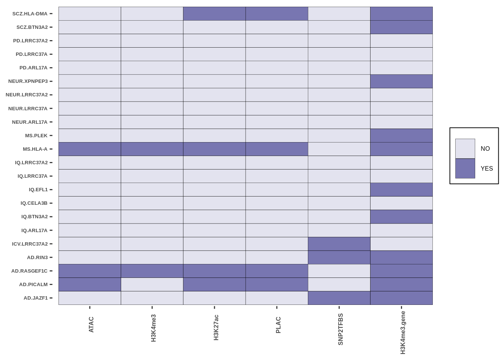
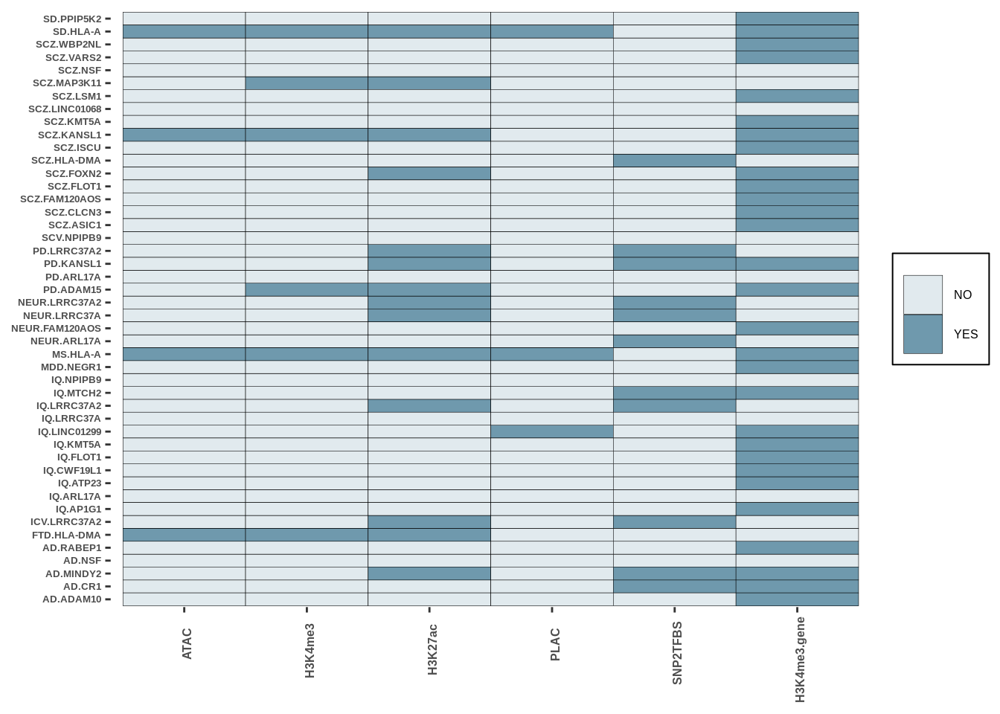
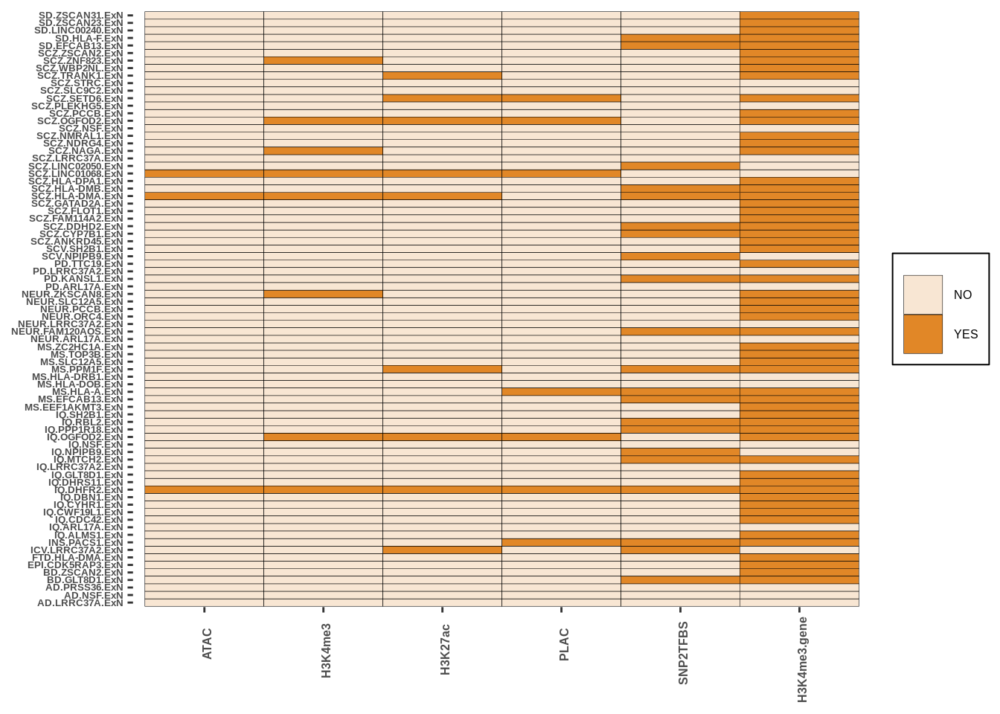
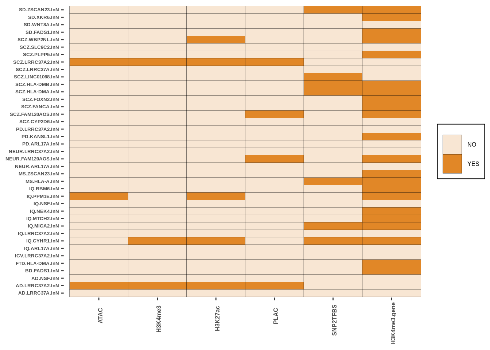

Last updated: 2022-11-18
Checks: 7 0
Knit directory: SingleCellMR/
This reproducible R Markdown analysis was created with workflowr (version 1.7.0). The Checks tab describes the reproducibility checks that were applied when the results were created. The Past versions tab lists the development history.
Great! Since the R Markdown file has been committed to the Git repository, you know the exact version of the code that produced these results.
Great job! The global environment was empty. Objects defined in the global environment can affect the analysis in your R Markdown file in unknown ways. For reproduciblity it’s best to always run the code in an empty environment.
The command set.seed(20221110) was run prior to running
the code in the R Markdown file. Setting a seed ensures that any results
that rely on randomness, e.g. subsampling or permutations, are
reproducible.
Great job! Recording the operating system, R version, and package versions is critical for reproducibility.
Nice! There were no cached chunks for this analysis, so you can be confident that you successfully produced the results during this run.
Great job! Using relative paths to the files within your workflowr project makes it easier to run your code on other machines.
Great! You are using Git for version control. Tracking code development and connecting the code version to the results is critical for reproducibility.
The results in this page were generated with repository version 85347c0. See the Past versions tab to see a history of the changes made to the R Markdown and HTML files.
Note that you need to be careful to ensure that all relevant files for
the analysis have been committed to Git prior to generating the results
(you can use wflow_publish or
wflow_git_commit). workflowr only checks the R Markdown
file, but you know if there are other scripts or data files that it
depends on. Below is the status of the Git repository when the results
were generated:
Ignored files:
Ignored: analysis/downstream.nb.html
Ignored: analysis/figure/
Ignored: analysis/figures.nb.html
Untracked files:
Untracked: analysis/DOWNSTREAM_RESULTS.Rmd
Untracked: analysis/eQTL_analysis.Rmd
Untracked: colossus/
Untracked: data/COLOC_MR_RESULTS/
Untracked: data/EXT_DATASETS/
Untracked: data/FIGURES/
Untracked: data/GWAS_STUDIES/
Untracked: data/MARKDOWN/
Untracked: data/METADATA/
Untracked: data/TABLES/
Untracked: data/derby.log
Untracked: data/eQTL_RESULTS/
Untracked: data/helper_files/
Untracked: data/logs/
Untracked: derby.log
Untracked: logs/
Unstaged changes:
Modified: analysis/_site.yml
Note that any generated files, e.g. HTML, png, CSS, etc., are not included in this status report because it is ok for generated content to have uncommitted changes.
These are the previous versions of the repository in which changes were
made to the R Markdown (analysis/downstream.Rmd) and HTML
(docs/downstream.html) files. If you’ve configured a remote
Git repository (see ?wflow_git_remote), click on the
hyperlinks in the table below to view the files as they were in that
past version.
| File | Version | Author | Date | Message |
|---|---|---|---|---|
| Rmd | 85347c0 | Alexander Haglund | 2022-11-18 | wflow_publish("analysis/downstream.Rmd") |
suppressMessages(library(tidyr))
suppressMessages(library(dplyr))coloc<-read.table("data/COLOC_MR_RESULTS//2022-10-25_FULL_COLOC_RES.txt")
message(paste0("Total traits analyzed: ",length(unique(coloc$GWAS))))Total traits analyzed: 23message(paste(unique(coloc$GWAS),collapse=", "))AD, ADHD, ALS, ANX, ASD, BD, DS, EPI.ALL, EPI.FD, EPI.GEN, FTD, HV, ICV, INS, IQ, MDD, MS, NEUR, PD, SCV, SCZ, SD, SWBcoloc<-coloc[coloc$PP.H4.abf>0.5,]
coloc<-coloc[,!colnames(coloc) %in% c("lead_snp","eQTL_pval","eQTL_FDR","directionality","GWAS_pval")]
message(paste0("Total traits with coloc hits: ",length(unique(coloc$GWAS))))Total traits with coloc hits: 16message(paste0("Total coloc hits: ",nrow(coloc)))Total coloc hits: 402message(paste(unique(coloc$GWAS),collapse=", "))AD, ADHD, BD, EPI.GEN, FTD, HV, ICV, INS, IQ, MDD, MS, NEUR, PD, SCV, SCZ, SDcoloc$gene_GWAS<-paste0(coloc$gene,"_",coloc$GWAS)
freq<-as.data.frame(table(coloc$gene_GWAS))
total<-nrow(freq)
morethan1<-nrow(freq[freq$Freq>1,])
only1<-nrow(freq)-morethan1
message(paste0("Of ",total," unique trait/gene combinations, ",morethan1," appear more than once (implicating more than one celltype)."))Of 255 unique trait/gene combinations, 60 appear more than once (implicating more than one celltype).message(paste0("This equates to a percentage of ",round((only1/total)*100,2),"% COLOC hits that are cell-type specific."))This equates to a percentage of 76.47% COLOC hits that are cell-type specific.full<-read.table("data/COLOC_MR_RESULTS//2022-10-25_FULL_MR_RES.txt")
full$GWAS_gene_ct<-paste0(full$GWAS,"_",full$gene,"_",full$celltype)
message(paste0("Total tests: ",nrow(full)))Total tests: 262message(paste0("Total traits: ",length(unique(full$GWAS))))Total traits: 16message(paste(unique(full$GWAS),collapse=", "))AD, ADHD, BD, EPI, FTD, HV, ICV, INS, IQ, MDD, MS, NEUR, PD, SCV, SCZ, SDmessage(paste0("Total unique genes: ",length(unique(full$gene))))Total unique genes: 121message(paste0("Total unique IV sets: ",length(unique(full$IVs))))Total unique IV sets: 167message(paste0("Total unique IV SNPs: ",length(unique(unlist(strsplit(full$IVs,","))))))Total unique IV SNPs: 172##multi vs single ivs
multi_ivs<-length(grep(",",full$IVs))
single_ivs<-nrow(full)-multi_ivs
multi_ivs_prop<-multi_ivs/nrow(full)
single_ivs_prop<-round((1-multi_ivs_prop),3)*100
message(paste0("In total, ",single_ivs," IV sets only had a single SNP, equating to ",single_ivs_prop,"%"))In total, 254 IV sets only had a single SNP, equating to 96.9%###filter results
full<-filter(full,IVW<0.05)
message(paste0("Total hits with significant MR results: ",nrow(full)))Total hits with significant MR results: 256message(paste0("Total traits with significant MR results: ",length(unique(full$GWAS))))Total traits with significant MR results: 16message(paste(unique(full$GWAS),collapse=", "))AD, ADHD, BD, EPI, FTD, HV, ICV, INS, IQ, MDD, MS, NEUR, PD, SCV, SCZ, SDmessage(paste0("Total unique genes in MR results: ",length(unique(full$gene))))Total unique genes in MR results: 118full$gene_trait<-paste0(full$gene,"_",full$GWAS)
message(paste0("Total unique gene/traits in MR results: ",length(unique(full$gene_trait))))Total unique gene/traits in MR results: 149message(paste0("Total unique IV sets in MR results: ",length(unique(full$IVs))))Total unique IV sets in MR results: 162full<-read.table("data/COLOC_MR_RESULTS//2022-10-25_FULL_MR_RES.txt")
full<-full[full$IVW<0.05,]
trait_split<-split(full,full$GWAS)
#split by gwas
for(i in 1:length(trait_split)){
df<-trait_split[[i]]
#keep unique genes per trait
df<-df[!duplicated(df$gene),]
trait_split[[i]]<-df
}
trait_df<-do.call(rbind,trait_split)
#check how many genes appear more than once
gene_freq<-as.data.frame(table(trait_df$gene))
gene_freq<-gene_freq[gene_freq$Freq>1,]
genes<-gene_freq$Var1
length(genes)[1] 21full<-read.table("data/COLOC_MR_RESULTS//2022-10-25_FULL_MR_RES.txt")
full<-full[full$IVW<0.05,]
full$gene_trait<-paste0(full$GWAS,"_",full$gene)
freq<-as.data.frame(table(full$gene_trait))
tot<-nrow(freq)
over_1_ct<-nrow(freq[freq$Freq>1,])
only_1_ct<-tot-over_1_ct
only_1_ct[1] 105only_1_ct/tot[1] 0.704698source("data/MARKDOWN//helper_funcs.r")
full<-read.table("data/COLOC_MR_RESULTS//2022-10-25_FULL_MR_RES.txt")
full$first_iv<-as.data.frame(do.call(rbind,strsplit(full$IVs,",")))$V1
full$snp_gene<-paste0(full$first_iv,"_",full$gene)
## dataset obtained from https://ccg.epfl.ch/snp2tfbs/
snp2tfbs<-read.table("data/EXT_DATASETS//SNP2TFBS/snp2tfbs_JASPAR_CORE_2014_vert.txt",sep="\t",fill=T)
colnames(snp2tfbs)<-c("rsid","chr","pos","A1","A2","disrupted_tfs_n","tf","PWM_A1","PWM_A2","PWM_diff")
##filter for tfbs disruption with scores
snp2tfbs<-filter(snp2tfbs,PWM_A1>=0 | PWM_A2>=0)
##get full list of IVs, some of the MR hits have more than one IV
snps<-full$IVs
rsids<-strsplit(full$IVs,", ")
##this function is in the helper_funcs.r file
results<-snp2tfbs_check_IVs(snp_list=rsids,snp2tfbs_table=snp2tfbs)
results$IVs<-full$IVs
table(results$tf_disrupted_any)
#out of the 258 MR tests, 66 contained an IV predicted to disrupt SNP2TFBS binding
full$SNP2TFBS_disrupt<-results$tf_disrupted_any
full$SNP2TFBS_top_TF<-results$top_tf
#now check unique IVs
results<-results[!duplicated(results$IVs),]
table(results$tf_disrupted_any)
results$IVs<-full$IVs
table(results$tf_disrupted_any)
#out of the 258 MR tests, 66 contained an IV predicted to disrupt SNP2TFBS binding
full$SNP2TFBS_disrupt<-results$tf_disrupted_any
full$SNP2TFBS_top_TF<-results$top_tf
results$IVs<-full$IVs
message("total IV sets disrupting TFBS")
table(results$tf_disrupted_any)
full$SNP2TFBS_disrupt<-results$tf_disrupted_any
full$SNP2TFBS_top_TF<-results$top_tf
#now check unique IVs
message("total unique IV sets disrupting TFBS")
results<-results[!duplicated(results$IVs),]
table(results$tf_disrupted_any)
snp2tfbs_suppl_table<-full[,c("GWAS","celltype","gene","IVs","SNP2TFBS_disrupt","SNP2TFBS_top_TF")]
write.table(snp2tfbs_suppl_table,"data/TABLES/SNP2TFBS_table.txt")results<-read.table("data/TABLES/SNP2TFBS_table.txt")table(results$SNP2TFBS_disrupt)
NO YES
196 66 ### total unique IV sets disrupting TFBS:
results<-results[!duplicated(results$IVs),]
table(results$SNP2TFBS_disrupt)
NO YES
126 41 source("data/MARKDOWN//helper_funcs.r")
##the helper funcs contain a number of helper functions created to speed up analysis, as well as essential packages.
## Note; these functions include a liftover step (hg38 to hg19, both genes and SNPs) to intersect with the Alexi Nott dataset.
## this necessitates a chain file (obtained from UCSC)
#this will be used downstream in the intersect wrap function
chain_dir<-"data/helper_files/"
imported_chain<-import.chain(paste0(chain_dir,"/hg38ToHg19.over.chain"))
inputdir<-"data/EXT_DATASETS/"
# reformat MR results
full<-read.table("data/COLOC_MR_RESULTS/2022-10-25_FULL_MR_RES.txt",stringsAsFactors = FALSE)
full$GWAS[which(full$GWAS=="SCV.CAUDATE")]<-"SCV"
##shorten cell-type names for easier plotting
full$celltype[which(full$celltype=="Excitatory")]<-"ExN"
full$celltype[which(full$celltype=="Inhibitory")]<-"InN"
full$celltype[which(full$celltype=="Oligo")]<-"ODC"
##count how many are left when only considering the 4 cell types
nrow(filter(full,celltype %in% c("ExN","ODC","InN","Microglia")))[1] 186##read in SNP locations file
snp_locations<-as.data.frame(data.table::fread("data/helper_files//snp_chromlocations_hg38.csv",stringsAsFactors = FALSE))
##read in gene locations file
gene_locations<-read.table("data/helper_files/Microglia_agg_cpm_gene_locations.csv",stringsAsFactors = FALSE)message("Intersecting Microglia")Intersecting Microgliasource("data/MARKDOWN//helper_funcs.r")
atac<-read.table(paste0(inputdir,"ALEXINOTT_PLACSEQ/brain-cell-type-peak-files//ATAC/PU1_optimal_peak_IDR_ENCODE.ATAC.bed"),stringsAsFactors = FALSE)
h3k27me<-read.table(paste0(inputdir,"ALEXINOTT_PLACSEQ/brain-cell-type-peak-files//H3K4me3//PU1_optimal_peak.H3K4me3.bed"),stringsAsFactors = FALSE)
h3k27ac<-read.table(paste0(inputdir,"ALEXINOTT_PLACSEQ//brain-cell-type-peak-files//H3K27ac/PU1_optimal_peak.H3K27.bed"),stringsAsFactors = FALSE)
plac<-read.table(paste0(inputdir,"ALEXINOTT_PLACSEQ//brain-cell-type-peak-files//PLACseq/Microglia.5k.2.peaks.bedpe"),head=T,stringsAsFactors = FALSE)
gene_locations<-read.table("data/helper_files/Microglia_agg_cpm_gene_locations.csv",stringsAsFactors = FALSE)
full2<-full[full$celltype %in% "Microglia",]
microglia_res<-intersect_wrap(full2,gene_locations = gene_locations, snp_locations=snp_locations,
plac_peaks=plac,atac_peaks=atac,h3kme_peaks=h3k27me,h3kac_peaks=h3k27ac)
colnames(microglia_res$gene_df)<-c("ATAC","H3K4me3","H3K27ac","gene","trait","PLAC","loop")
colnames(microglia_res$snp_df)<-c("ATAC","H3K4me3","H3K27ac","gene","trait","PLAC","position")
##we decided not too include the gene promoter info. Add plac-seq loop info to snp_df
microglia_res$snp_df$PLAC<-microglia_res$gene_df$loop
microglia_res$snp_df$trait<-gsub("_",".",microglia_res$snp_df$trait)
##save results in EXT_DATASETS/RESULTS folder
saveRDS(microglia_res,paste0(inputdir,"RESULTS/microglia_epigenetic_intersection_res.rds"))
## we decided to include the SNP2TFBS
microglia_res<-readRDS("data/EXT_DATASETS//RESULTS//microglia_epigenetic_intersection_res.rds")
snp2tfbs<-read.table("data/TABLES//SNP2TFBS_table.txt")
tmp<-snp2tfbs[snp2tfbs$celltype %in% "Microglia",]
tmp$trait<-paste0(tmp$GWAS,".",tmp$gene)
microglia_res$snp_df$SNP2TFBS<-tmp[match(microglia_res$snp_df$trait,tmp$trait),]$SNP2TFBS_disrupt
microglia_res$snp_df$trait<-gsub("_",".",microglia_res$snp_df$trait)
##this also creates a ggobject, see figure section
g<-create_plot_wrap(microglia_res,paste0(inputdir,"RESULTS/microglia_intersect.png"),color_pal=c("#E3E3EF","#7876B1FF"))
g
###Oligo
message("Intersecting Oligos")Intersecting Oligosatac<-read.table(paste0(inputdir,"ALEXINOTT_PLACSEQ/brain-cell-type-peak-files//ATAC/Olig2_optimal_peak_IDR_ENCODE.ATAC.bed"))
h3k27me<-read.table(paste0(inputdir,"ALEXINOTT_PLACSEQ/brain-cell-type-peak-files//H3K4me3//Olig2_optimal_peak.H3K4me3.bed"))
h3k27ac<-read.table(paste0(inputdir,"ALEXINOTT_PLACSEQ//brain-cell-type-peak-files//H3K27ac/Olig2_optimal_peak.H3K27.bed"))
plac<-read.table(paste0(inputdir,"ALEXINOTT_PLACSEQ//brain-cell-type-peak-files//PLACseq/Olig2.5k.2.peaks.bedpe"),head=T)
gene_locations<-read.table("data/helper_files/Oligo_agg_cpm_gene_locations.csv")
full2<-full[full$celltype %in% "ODC",]
oligo_res<-intersect_wrap(full2,gene_locations = gene_locations, snp_locations=snp_locations,
plac_peaks=plac,atac_peaks=atac,h3kme_peaks=h3k27me,h3kac_peaks=h3k27ac)
colnames(oligo_res$gene_df)<-c("ATAC","H3K4me3","H3K27ac","gene","trait","PLAC","loop")
colnames(oligo_res$snp_df)<-c("ATAC","H3K4me3","H3K27ac","gene","trait","PLAC","position")
oligo_res$snp_df$PLAC<-oligo_res$gene_df$loop
oligo_res$snp_df$trait<-gsub("_",".",oligo_res$snp_df$trait)
saveRDS(oligo_res,paste0(inputdir,"RESULTS/oligo_epigenetic_intersection_res.rds"))
## we decided to include the SNP2TFBS
oligo_res<-readRDS("data/EXT_DATASETS//RESULTS//oligo_epigenetic_intersection_res.rds")
snp2tfbs<-read.table("data/TABLES//SNP2TFBS_table.txt")
tmp<-snp2tfbs[snp2tfbs$celltype %in% "ODC",]
tmp$trait<-paste0(tmp$GWAS,".",tmp$gene)
oligo_res$snp_df$SNP2TFBS<-tmp[match(oligo_res$snp_df$trait,tmp$trait),]$SNP2TFBS_disrupt
g<-create_plot_wrap(oligo_res,paste0(inputdir,"RESULTS/oligo_intersect.png"),color_pal=c("#E1EAEE","#6F99ADFF"),dims=c(width=4,height=8))
g
##Splitting Exc and Inh Neur in two, too large for a single plot
##Exc Neur
message("Intersecting ExcNeurons")Intersecting ExcNeuronsatac<-read.table(paste0(inputdir,"ALEXINOTT_PLACSEQ/brain-cell-type-peak-files//ATAC/NeuN_optimal_peak_IDR_ENCODE.ATAC.bed"))
h3k27me<-read.table(paste0(inputdir,"ALEXINOTT_PLACSEQ/brain-cell-type-peak-files//H3K4me3//NeuN_optimal_peak.H3K4me3.bed"))
h3k27ac<-read.table(paste0(inputdir,"ALEXINOTT_PLACSEQ//brain-cell-type-peak-files//H3K27ac/NeuN_optimal_peak.H3K27.bed"))
plac<-read.table(paste0(inputdir,"ALEXINOTT_PLACSEQ//brain-cell-type-peak-files//PLACseq/NeuN.5k.2.peaks.bedpe"),head=T)
gene_locations<-read.table("data/helper_files/Excitatory_agg_cpm_gene_locations.csv")
full2<-full[full$celltype %in% "ExN",]
neurons_res<-intersect_wrap(full2,gene_locations = gene_locations, snp_locations=snp_locations,
plac_peaks=plac,atac_peaks=atac,h3kme_peaks=h3k27me,h3kac_peaks=h3k27ac)
colnames(neurons_res$gene_df)<-c("ATAC","H3K4me3","H3K27ac","gene","trait","PLAC","loop")
colnames(neurons_res$snp_df)<-c("ATAC","H3K4me3","H3K27ac","gene","trait","PLAC","position")
neurons_res$snp_df$trait<-gsub("_",".",neurons_res$snp_df$trait)
neurons_res$snp_df$trait<-paste0(neurons_res$snp_df$trait,".ExN")
neurons_res$snp_df$PLAC<-neurons_res$gene_df$loop
saveRDS(neurons_res,paste0(inputdir,"RESULTS/Excneurons_epigenetic_intersection_res.rds"))
## we decided to include the SNP2TFBS
neurons_res<-readRDS("data/EXT_DATASETS//RESULTS//Excneurons_epigenetic_intersection_res.rds")
snp2tfbs<-read.table("data/TABLES//SNP2TFBS_table.txt")
tmp<-snp2tfbs[snp2tfbs$celltype %in% "Excitatory",]
tmp$celltype<-"ExN"
tmp$trait<-paste0(tmp$GWAS,".",tmp$gene,".",tmp$celltype)
neurons_res$snp_df$SNP2TFBS<-tmp[match(neurons_res$snp_df$trait,tmp$trait),]$SNP2TFBS_disrupt
g<-create_plot_wrap(neurons_res,paste0(inputdir,"RESULTS/Excneuron_intersect.png"),color_pal=c("#F8E6D3","#E18727FF"))
g
##Inh Neur
message("Intersecting InhNeurons")Intersecting InhNeuronsatac<-read.table(paste0(inputdir,"ALEXINOTT_PLACSEQ/brain-cell-type-peak-files//ATAC/NeuN_optimal_peak_IDR_ENCODE.ATAC.bed"))
h3k27me<-read.table(paste0(inputdir,"ALEXINOTT_PLACSEQ/brain-cell-type-peak-files//H3K4me3//NeuN_optimal_peak.H3K4me3.bed"))
h3k27ac<-read.table(paste0(inputdir,"ALEXINOTT_PLACSEQ//brain-cell-type-peak-files//H3K27ac/NeuN_optimal_peak.H3K27.bed"))
plac<-read.table(paste0(inputdir,"ALEXINOTT_PLACSEQ//brain-cell-type-peak-files//PLACseq/NeuN.5k.2.peaks.bedpe"),head=T)
gene_locations<-read.table("data/helper_files/Inhibitory_agg_cpm_gene_locations.csv")
full2<-full[full$celltype %in% "InN",]
neurons_res<-intersect_wrap(full2,gene_locations = gene_locations, snp_locations=snp_locations,
plac_peaks=plac,atac_peaks=atac,h3kme_peaks=h3k27me,h3kac_peaks=h3k27ac)
colnames(neurons_res$gene_df)<-c("ATAC","H3K4me3","H3K27ac","gene","trait","PLAC","loop")
colnames(neurons_res$snp_df)<-c("ATAC","H3K4me3","H3K27ac","gene","trait","PLAC","position")
neurons_res$snp_df$trait<-gsub("_",".",neurons_res$snp_df$trait)
neurons_res$snp_df$trait<-paste0(neurons_res$snp_df$trait,".InN")
neurons_res$snp_df$PLAC<-neurons_res$gene_df$loop
saveRDS(neurons_res,paste0(inputdir,"RESULTS/Inneurons_epigenetic_intersection_res.rds"))
## we decided to include the SNP2TFBS
neurons_res<-readRDS("data/EXT_DATASETS//RESULTS//Inneurons_epigenetic_intersection_res.rds")
snp2tfbs<-read.table("data/TABLES//SNP2TFBS_table.txt")
tmp<-snp2tfbs[snp2tfbs$celltype %in% "Inhibitory",]
tmp$celltype<-"InN"
tmp$trait<-paste0(tmp$GWAS,".",tmp$gene,".",tmp$celltype)
neurons_res$snp_df$SNP2TFBS<-tmp[match(neurons_res$snp_df$trait,tmp$trait),]$SNP2TFBS_disrupt
g<-create_plot_wrap(neurons_res,paste0(inputdir,"RESULTS/Inneuron_intersect.png"),color_pal=c("#F8E6D3","#E18727FF"))
g
source("data/MARKDOWN//helper_funcs.r")
full<-read.table("data/COLOC_MR_RESULTS/2022-10-25_FULL_MR_RES.txt")
#downstream analysis - at this point, filter for significant MR hits
full<-full[full$IVW<0.05,]
pqtl<-read.csv("data/EXT_DATASETS//PQTL/ROSMAP_DLPFC_pQTLs.csv",head=T)
##attach protein symbols, manually converted from uniprot IDs
conversion<-read.table("data/EXT_DATASETS//PQTL//Uniprot_Conversion.txt",head=T)
pqtl$gene<-conversion[match(pqtl$UNIPROT,conversion$From),]$To
pqtl<-pqtl[complete.cases(pqtl),]
##use helper function to convert chrpos to rsids for intersection with our MR hits
pqtl$chrpos=paste0(pqtl$CHR,":",pqtl$POS)
#build is hg37
pqtl$SNP<-chrpos_to_rsid(pqtl$chrpos,build="hg37")
pqtl$snp_gene<-paste0(pqtl$SNP,"_",pqtl$gene)# get SNPs in LD
this step takes a long time.
outdir<-("EXT_DATASETS//RESULTS/LD_RESULTS/")
snps<-strsplit(full$IVs,", ")
snps<-unlist(snps)
# Using a loop to set output file
for(i in 1:length(snps)){
snp<-snps[i]
suppressMessages(ld_res<-LDlinkR::LDproxy(snp,pop="CEU",token = "f3d054e6c0ee"))
write.table(ld_res,paste0(outdir,snp,"_ldres.txt"))
}##treat every IV as a list, to account for situations where you have more than one IV
IVs<-strsplit(full$IVs,", ")
##keep IVs>0.8
r2_filter<-0.7
pqtl_FDR_min<-0.05
ld_file_list<-list.files("data/EXT_DATASETS//RESULTS/LD_RESULTS/",full.names=T)
#create empty result vector
resvec<-vector()
pqtl_fdr<-vector()
lead_snp<-vector()
for(i in 1:nrow(full)){
tmp_ivs<-IVs[[i]]
gene<-full$gene[i]
##check pQTL first to see if protein is assessed in this dataset (they only look at ~7k proteins)
tmp_pqtl<-pqtl[pqtl$gene %in% gene,]
if(nrow(tmp_pqtl)==0){
resvec<-c(resvec,"N/a")
pqtl_fdr<-c(pqtl_fdr,"N/a")
lead_snp<-c(lead_snp,"N/a")
next
}
##get SNPs
if(length(tmp_ivs)>1){
#if more than one IV, read in each LD table sequentially and bind together
#initiate empty df
ld_res<-data.frame()
for(b in 1:length(tmp_ivs)){
x<-tmp_ivs[b]
#grab the LD file by matching IV name
ld_file<-ld_file_list[grep(x,ld_file_list)]
ld_res1<-read.table(ld_file)
ld_res<-rbind(ld_res,ld_res1)
}
} else {
#grab the LD file by matching IV name
ld_file<-ld_file_list[grep(tmp_ivs,ld_file_list)]
ld_res<-read.table(ld_file)
}
#now filter for snps in high LD using a decided threshold
ld_res<-filter(ld_res, R2>r2_filter)
ld_res$SNP_gene<-paste0(ld_res$RS_Number,"_",gene)
#now check SNP/gene pairs
tmp_pqtl<-filter(tmp_pqtl,snp_gene %in% ld_res$SNP_gene)
#filter for the FDR threshold
tmp_pqtl<-filter(tmp_pqtl,FDR<pqtl_FDR_min)
if(nrow(tmp_pqtl)>0){
resvec<-c(resvec,"YES")
#save top hit and lead SNP
pqtl_fdr<-c(pqtl_fdr,min(tmp_pqtl$FDR))
snp<-tmp_pqtl[order(tmp_pqtl$FDR),]$SNP[1]
lead_snp<-c(lead_snp,snp)
}else{
resvec<-c(resvec,"NO")
pqtl_fdr<-c(pqtl_fdr,"NO")
lead_snp<-c(lead_snp,"NO")
}
}full$pQTL_hit<-resvec
full$pQTL_snp<-lead_snp
full$pQTL_FDR<-pqtl_fdr
pqtl_table<-full[,c("GWAS","celltype","gene","IVs","eQTL_FDR","pQTL_hit","pQTL_snp","pQTL_FDR")]
head(pqtl_table) GWAS celltype gene IVs eQTL_FDR pQTL_hit
AD_Astrocytes_SNX31 AD Astrocytes SNX31 rs1693551 6.255985e-08 N/a
AD_Microglia_RIN3 AD Microglia RIN3 rs12590654 1.310662e-02 N/a
AD_Microglia_PICALM AD Microglia PICALM rs10792832 3.554858e-03 NO
AD_Excitatory_LRRC37A AD Excitatory LRRC37A rs4510068 5.337876e-06 N/a
AD_Inhibitory_LRRC37A AD Inhibitory LRRC37A rs4510068 3.877490e-05 N/a
AD_Microglia_JAZF1 AD Microglia JAZF1 rs4722758 1.103842e-07 N/a
pQTL_snp pQTL_FDR
AD_Astrocytes_SNX31 N/a N/a
AD_Microglia_RIN3 N/a N/a
AD_Microglia_PICALM NO NO
AD_Excitatory_LRRC37A N/a N/a
AD_Inhibitory_LRRC37A N/a N/a
AD_Microglia_JAZF1 N/a N/aindir<-"data/EXT_DATASETS//STITCH/"
library(biomaRt)
full<-read.table("data/COLOC_MR_RESULTS//2022-10-25_FULL_MR_RES.txt")
### filter
full<-full[full$IVW<0.05,]
#read in data. Obtained from http://stitch.embl.de/
stitch<-read.table(paste0(indir,"9606.protein_chemical.links.v5.0.tsv"),head=T)
stitch$protein<-gsub("9606.","",stitch$protein)
stitch$combined_score<-stitch$combined_score/1000
mart = useMart(host = 'grch37.ensembl.org', biomart='ENSEMBL_MART_ENSEMBL', dataset='hsapiens_gene_ensembl')
mart=useDataset("hsapiens_gene_ensembl",mart = mart)
ensembl_genes <-unique(stitch$protein)
gene_names <- getBM(
filters= "ensembl_peptide_id",
attributes= c("ensembl_peptide_id","hgnc_symbol","description"),
values= ensembl_genes,
mart= mart)
stitch$gene<-gene_names[match(stitch$protein,gene_names$ensembl_peptide_id),]$hgnc_symbol
##filter by stitch score
stitch_score_min=0.7
stitch_filtered<-stitch[stitch$combined_score>stitch_score_min,]
full$STITCH_intersect<-sapply(full$gene,function(x){
tmp_stitch<-stitch_filtered[stitch_filtered$gene %in% x,]
if(nrow(tmp_stitch)>=1){
return("YES")
}else{
return("NO")
}
})
full$STITCH_n_compounds<-sapply(full$gene,function(x){
tmp_stitch<-stitch_filtered[stitch_filtered$gene %in% x,]
if(nrow(tmp_stitch)>=1){
return(nrow(tmp_stitch))
}else{
return(0)
}
})
stitch_table<-full[,c("GWAS","celltype","gene","STITCH_intersect","STITCH_n_compounds")]
write.table(stitch_table,"data/TABLES/stitch_table.txt")stitch_table<-read.table("data/TABLES//stitch_table.txt")
stitch_table<-stitch_table[!duplicated(stitch_table$gene),]
table(stitch_table$STITCH_intersect)
NO YES
60 58 source("data/MARKDOWN//helper_funcs.r")
suppressMessages(library(sparklyr))
sc <- spark_connect(master = "local",version="3.1")
full<-read.table("data/COLOC_MR_RESULTS//2022-10-25_FULL_MR_RES.txt")
full<-full[full$IVW<0.05,]
evidencePath <-"data/EXT_DATASETS//OPENTARGETS/associationByOverallDirect"
evd <- spark_read_parquet(sc,path = evidencePath)
OT_disease<-evd %>% collect()
##keep scores above 0
OT_disease<-OT_disease[OT_disease$score>0,]
#my own helper function to convert geneids; see helper_funcs.r
conversion_df<-convert_geneids(unique(OT_disease$targetId),format="ENSEMBL",conversion="SYMBOL")
OT_disease$gene<-conversion_df[match(OT_disease$targetId,conversion_df$pre_conversion),]$symbols### read in disease/trait names
#this step takes a long time
evidencePath <-"data/EXT_DATASETS//OPENTARGETS/diseases/"
OT_disease_terms<- spark_read_parquet(sc,path=evidencePath)
OT_disease_terms<-OT_disease_terms %>%
collect()trait_names<-c("Alzheimer disease","attention deficit-hyperactivity disorder",
"bipolar disorder","Generalized epilepsy","frontotemporal dementia","hippocampal volume",
"intracranial volume measurement","insomnia","intelligence",
"major depressive disorder","multiple sclerosis","neurotic","Parkinson",
"caudate nucleus volume","schizophrenia","sleep duration")
trait_df<-data.frame(GWAS=unique(full$GWAS),trait=trait_names)
full$trait<-trait_df[match(full$GWAS,trait_df$GWAS),]$traitresvec<-vector()
for(i in 1:nrow(full)){
mr_gene<-full$gene[i]
trait<-full$trait[i]
##extract trait IDs from the first opentargets dataset, looking only at the MR gene
OT_disease_tmp<-filter(OT_disease,gene %in% mr_gene)
trait_ids<-OT_disease$diseaseId
if(nrow(OT_disease_tmp)==0){
resvec<-c(resvec,"NO")
next
}
##now check in the disease terms whether they appear (can be more than one hit)
OT_disease_terms_tmp<-filter(OT_disease_terms,id %in% trait_ids)
OT_disease_terms_tmp<-OT_disease_terms_tmp[grep(trait,OT_disease_terms_tmp$synonyms),]
if(nrow(OT_disease_terms_tmp)>0){
resvec<-c(resvec,"YES")
}else{
resvec<-c(resvec,"NO")
}
}full$OpenTargets_disease_hit<-resvec
OT_table<-full[,c("GWAS","gene","celltype","OpenTargets_disease_hit")]
write.table(OT_table,"data/TABLES/OpenTargets_table.txt")full<-read.table("data/COLOC_MR_RESULTS//2022-10-25_FULL_MR_RES.txt")
full<-full[full$IVW<0.05,]
## read in dgidb dataset
dgidb<-read.csv("data/EXT_DATASETS/DGIDB/interactions.tsv",sep="\t")
full$DGIDB_intersect<-sapply(full$gene,function(x){
tmp_dgidb<-dgidb[dgidb$gene_name %in% x,]
if(nrow(tmp_dgidb)>=1){
return("YES")
}else{
return("NO")
}
})
dgidb_table<-full[,c("GWAS","celltype","gene","DGIDB_intersect")]
write.table(dgidb_table,"data/TABLES/dgidb_table.txt")dgidb_table<-read.table("data/TABLES//OpenTargets_table.txt")
dgidb_table<-dgidb_table[!duplicated(dgidb_table$gene),]
table(dgidb_table$DGIDB_intersect)< table of extent 0 >
sessionInfo()R version 4.0.5 (2021-03-31)
Platform: x86_64-conda-linux-gnu (64-bit)
Running under: Ubuntu 18.04.6 LTS
Matrix products: default
BLAS/LAPACK: /home/ah3918/anaconda3/envs/ODIN3/lib/libopenblasp-r0.3.12.so
locale:
[1] LC_CTYPE=en_GB.UTF-8 LC_NUMERIC=C
[3] LC_TIME=en_GB.UTF-8 LC_COLLATE=en_GB.UTF-8
[5] LC_MONETARY=en_GB.UTF-8 LC_MESSAGES=en_GB.UTF-8
[7] LC_PAPER=en_GB.UTF-8 LC_NAME=C
[9] LC_ADDRESS=C LC_TELEPHONE=C
[11] LC_MEASUREMENT=en_GB.UTF-8 LC_IDENTIFICATION=C
attached base packages:
[1] stats4 parallel stats graphics grDevices utils datasets
[8] methods base
other attached packages:
[1] biomaRt_2.46.3
[2] sparklyr.nested_0.0.3
[3] sparklyr_1.7.8
[4] ggplot2_3.3.6
[5] org.Hs.eg.db_3.12.0
[6] SNPlocs.Hsapiens.dbSNP151.GRCh38_0.99.20
[7] TxDb.Hsapiens.UCSC.hg19.knownGene_3.2.2
[8] GenomicFeatures_1.42.3
[9] AnnotationDbi_1.52.0
[10] Biobase_2.50.0
[11] SNPlocs.Hsapiens.dbSNP144.GRCh37_0.99.20
[12] BSgenome_1.58.0
[13] rtracklayer_1.50.0
[14] Biostrings_2.58.0
[15] XVector_0.30.0
[16] GenomicRanges_1.42.0
[17] GenomeInfoDb_1.26.7
[18] IRanges_2.24.1
[19] S4Vectors_0.28.1
[20] BiocGenerics_0.36.1
[21] dplyr_1.0.9
[22] tidyr_1.2.1
[23] workflowr_1.7.0
loaded via a namespace (and not attached):
[1] colorspace_2.0-3 ellipsis_0.3.2
[3] rprojroot_2.0.3 base64enc_0.1-3
[5] fs_1.5.2 rstudioapi_0.13
[7] farver_2.1.1 bit64_4.0.5
[9] fansi_1.0.3 xml2_1.3.3
[11] cachem_1.0.6 knitr_1.39
[13] config_0.3.1 jsonlite_1.8.0
[15] listviewer_3.0.0 Rsamtools_2.6.0
[17] dbplyr_2.2.1 compiler_4.0.5
[19] httr_1.4.3 assertthat_0.2.1
[21] Matrix_1.5-1 fastmap_1.1.0
[23] cli_3.4.1 later_1.2.0
[25] htmltools_0.5.3 prettyunits_1.1.1
[27] tools_4.0.5 gtable_0.3.1
[29] glue_1.6.2 GenomeInfoDbData_1.2.4
[31] reshape2_1.4.4 rappdirs_0.3.3
[33] Rcpp_1.0.9 jquerylib_0.1.4
[35] vctrs_0.5.0 xfun_0.32
[37] stringr_1.4.0 ps_1.7.1
[39] lifecycle_1.0.3 XML_3.99-0.10
[41] getPass_0.2-2 zlibbioc_1.36.0
[43] scales_1.2.1 ragg_1.2.2
[45] hms_1.1.1 promises_1.2.0.1
[47] MatrixGenerics_1.2.1 SummarizedExperiment_1.20.0
[49] yaml_2.3.5 curl_4.3.2
[51] memoise_2.0.1 forge_0.2.0
[53] sass_0.4.2 stringi_1.7.8
[55] RSQLite_2.2.15 highr_0.9
[57] BiocParallel_1.24.1 rlang_1.0.6
[59] pkgconfig_2.0.3 systemfonts_1.0.4
[61] matrixStats_0.62.0 bitops_1.0-7
[63] evaluate_0.16 lattice_0.20-45
[65] purrr_0.3.4 GenomicAlignments_1.26.0
[67] htmlwidgets_1.5.4 bit_4.0.4
[69] processx_3.7.0 tidyselect_1.1.2
[71] plyr_1.8.7 magrittr_2.0.3
[73] R6_2.5.1 generics_0.1.3
[75] DelayedArray_0.16.3 DBI_1.1.3
[77] pillar_1.8.1 whisker_0.4
[79] withr_2.5.0 RCurl_1.98-1.8
[81] tibble_3.1.8 crayon_1.5.1
[83] uuid_1.1-0 utf8_1.2.2
[85] BiocFileCache_1.14.0 rmarkdown_2.15
[87] progress_1.2.2 grid_4.0.5
[89] data.table_1.14.2 blob_1.2.3
[91] callr_3.7.1 git2r_0.30.1
[93] digest_0.6.30 httpuv_1.6.5
[95] r2d3_0.2.6 textshaping_0.3.6
[97] openssl_2.0.2 munsell_0.5.0
[99] bslib_0.4.0 askpass_1.1